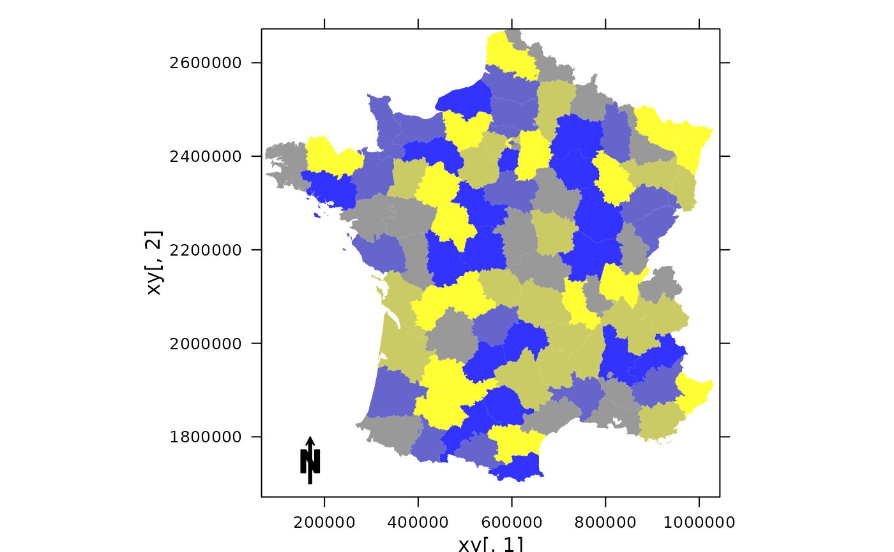

Panel function for adding spatial objects.
adeg.panel.Spatial.RdPanel function adapted from the Sp package for displaying all kind of spatial
objects handled by Sp (for classes inherited from the superclass Spatial)
into a trellis graphic (lattice package).
Usage
adeg.panel.Spatial(SpObject, sp.layout = NULL, col = 1, border = 1, lwd = 1,
lty = 1, alpha = 0.8, cex = 1, pch = 20, n = length(col), spIndex = 1, ...)Arguments
- SpObject
an object of class
"SpatialPoints","SpatialPointsDataFrame","SpatialPixels","SpatialPixelsDataFrame","SpatialGrid","SpatialGridDataFrame","SpatialLines","SpatialLinesDataFrame","SpatialPolygons"or"SpatialPolygonsDataFrame"- sp.layout
a list of layout items. See
spplotfor more information- col
background color (fill) of
Spobject- border
border color
- lwd
line width (border)
- lty
line type (border)
- alpha
background transparency of
Spobject- cex
point size
- pch
point type
- n
if
SpObjectcontains data, the _desired_ number of intervals splitting the data (usingpretty).- spIndex
if the
SpObjectcontains a data frame, its values are represented with a color code. Only thespIndexdata frame is represented- ...
for coherence with panel functions
References
Package Sp. Author: Edzer Pebesma, Roger Bivand, Barry Rowlingson and Virgilo Gomez-Rubio.
Author
Alice Julien-Laferriere, Aurelie Siberchicot aurelie.siberchicot@univ-lyon1.fr and Stephane Dray
Note
If SpObject contains several maps, only the first one is selected.
Also for objects containing more data (for classes data.frame with a slot data), this information is also shown.
To do so, various colors can be used (according to the col arguments).
For more information about the use of panel functions, please see the lattice package developed by Deepayan Sarkar.
Examples
if(require(lattice, quietly = TRUE) & require(sp, quietly = TRUE)) {
data(elec88, package = "ade4")
xy <- elec88$xy
arrow <- list("SpatialPolygonsRescale", offset = c(150000,1700000),
layout.north.arrow(), scale = 100000)
xyplot(xy[, 2] ~ xy[, 1], aspect = "iso", panel = function(...){
adeg.panel.Spatial(SpObject = elec88$Spatial, sp.layout = list(arrow),
col = colorRampPalette(c("yellow", "blue"))(5), border =
"transparent")})
}
